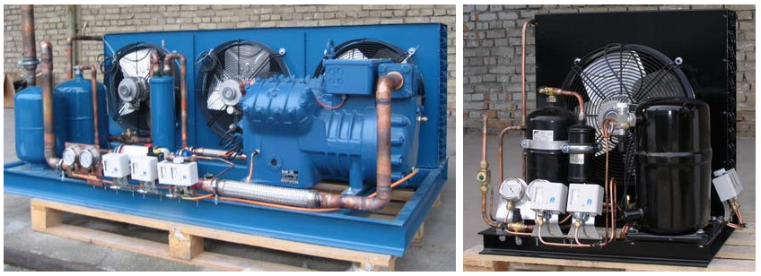

News Title: We offer design and assembly of refrigeration equipment Posted on: April 20, 2014 by Petko Petkov  To interested clients we offer calculation, design and delivery of equipment for cold rooms for freezing and storage of food products and for installations for the cooling of water, wine, milk and other liquids. Thus far we have designed and completed refrigeration installations - from individual cold rooms to complete refrigeration equipment for an entire chicken-processing plant, for our clients in Bulgaria, Romania, Ukraine, Italy, Cyprus and Great Britain. We offer excellent prices because we are a direct importer of goods from multiple manufacturers, which allows us to offer an optimal combination of price and quality, instead of being forced to work with only the products of one-two manufacturers. The quality of our refrigeration equipment is superior and is guaranteed by both the world-renowned manufacturers with which we work and our own 20-year practical experience in the field of refrigeration technology in Bulgaria. We will be pleased to receive your inquiries for custom refrigeration equipment for your specific needs. Comments: Russel Donaldson said on 17th of April, 2014: Thx! We are very interested in this! Kathleen Tennison said on 19th of April,2014: Will you really calculate and design it for us? Comment Yourself: Name: Comment: Submit Comment